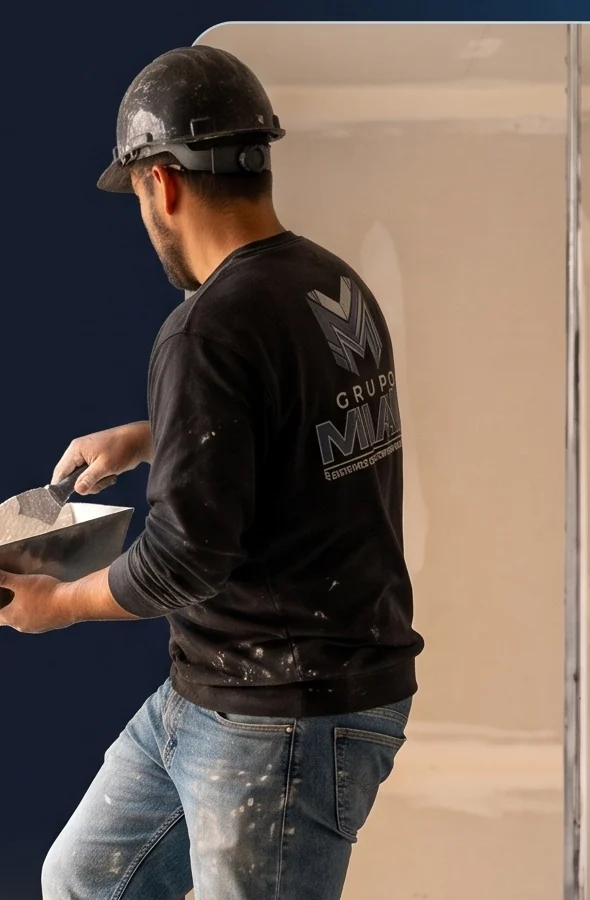
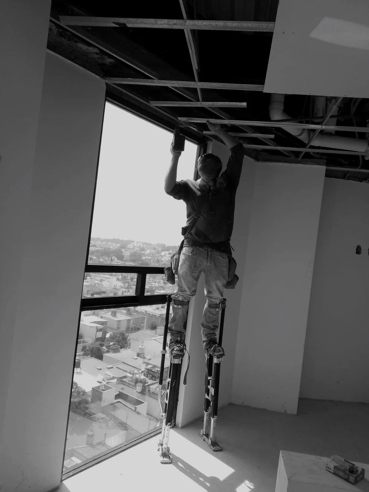

01 / SISTEMAS
Tablaroca y bastidores
Instalación de paneles de yeso y derivados. Muros, plafones, lambrines, platabandas, cajillos, fachadas y elementos decorativos a medida.
Cotizar este servicioConstruyendo
Sistemas de construcción ligera
Sistemas de Tablaroca y paneles de yeso, Durock, Permabase y DensGlass, con bastidores, Redimix, estuco y pintura cuidada hasta el último detalle.

Sistemas bien especificados, ejecución precisa y acabados pensados para cada espacio.
Instalación de paneles de yeso y derivados. Muros, plafones, lambrines, platabandas, cajillos, fachadas y elementos decorativos a medida.
Cotizar este servicioSistemas con Durock o Permabase, y paneles DensGlass, Glass y derivados, elegidos según el área y las condiciones del proyecto.
Cotizar este servicioTratamiento de juntas con Redimix del nivel 1 al 5 o superior, resanes, estuco y preparación profesional de superficies.
Cotizar este servicioPreparación y aplicación de pintura para lograr superficies uniformes, cortes limpios y una terminación lista para disfrutarse.
Cotizar este servicioDe la idea al último detalle
Cada proyecto tiene sus propios retos. Trabajamos por etapas para cuidar la ejecución y mantener claras las decisiones.
Alineamos necesidades, espacio y acabados para establecer una ruta de trabajo.
Organizamos los sistemas y materiales de acuerdo con las características de cada área.
Integramos tratamiento de juntas, pastas y pintura para lograr una terminación uniforme.
Hacemos una revisión visual de continuidad, limpieza y terminaciones antes de concluir.
Trabajo real, detalle en cada acabado
Explora estuco, pasta Redimix, tablaroca, Durock y pintura. Cada galería reúne imágenes de obra y acabados; pronto sumaremos videos de nuestros procesos.
Fotografías de obra y acabados MIAC.
Sección Estuco, foto 1 de 14.
Personas y trabajo real detrás de cada acabado.

Foto 1 de 4: Miguel Contreras.
En Grupo MIAC nos especializamos en transformar espacios con los más altos estándares de calidad. Contamos con personal altamente calificado en sistemas de construcción ligera, asegurando estructuras sólidas y niveladas.
Nuestro compromiso es entregar proyectos impecables, a tiempo y con acabados que superan las expectativas. Cuidamos cada detalle desde el bastidor hasta la última capa de pintura. Tu visión es nuestro plano de trabajo.
Carretera México Toluca, km. 30. Colonia La Pila, 05750, Cuajimalpa de Morelos, CDMX.
Explora el mapa interactivo y abre indicaciones a nuestra ubicación en La Pila.
Ubicación: Carretera México Toluca, km. 30, Colonia La Pila, Cuajimalpa de Morelos.
Abrir mapa e indicacionesHablemos de tu espacio
Cuéntanos qué necesitas construir o renovar. Te ayudamos a explorar una solución para tu espacio.